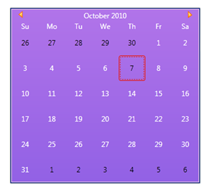

You can set the custom color for the WPF controls by using the ActiveColorScheme property defined in the Skin Manager class. This property can be set either in XAML or in C#.
Table 78: ActiveColorScheme Property
|
Property |
Description |
Type |
Data Type |
Reference links |
|
ActiveColorScheme |
Sets the custom color for the controls.
|
Attached Property |
SolidColorBrush
|
Setting ActiveColorScheme property in XAML
Setting ActiveColorScheme property in C#
|
Setting ActiveColorScheme property in XAML
The following code snippet explains how to set the ActiveColorScheme property in XAML.
1. Add the following namespace in the sample.
|
[XAML] xmlns:syncfusion=http://schemas.syncfusion.com/wpf
|
2. Set the ActiveColorScheme property for the control as shown below.
|
[XAML] <syncfusion:CalendarEdit Name="calendar" syncfusion:SkinManager.ActiveColorScheme="Red"></syncfusion:CalendarEdit> |
Setting ActiveColorScheme property in C#
You can set the custom color for the WPF controls in C# using SetActiveColorScheme.
The following code snippet explains how to set the ActiveColorScheme property in C#.
1. Name the control using the Name attribute.
|
[XAML] <syncfusion:CalendarEdit Name="calendar"></syncfusion:CalendarEdit>
|
2. Add the following line in code behind file.
|
[C#] SkinManager.SetActiveColorScheme(calendar, Brushes.Red);
|
The output is displayed as shown below.

Figure 951 : Calendar with Custom Color